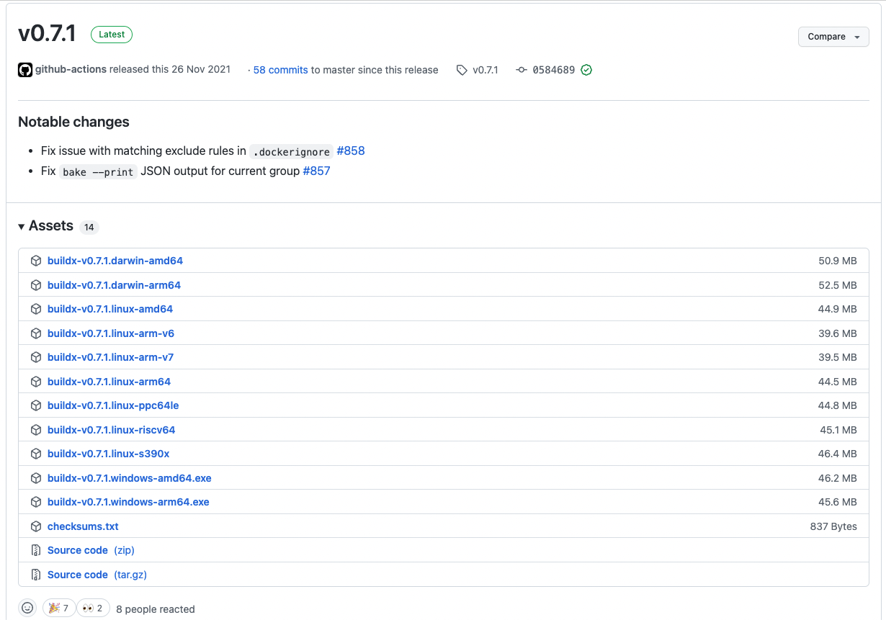
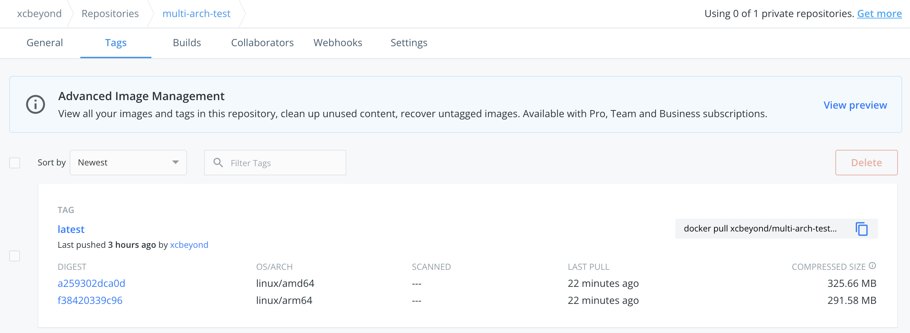

在云时代，容器化已经成为一种事实，把软件产品打包、构建成 Docker 镜像是最基本、最关键的一步。在信创的大背景下，云环境中会存在 x86、arm 等不同的架构，所以在构建镜像时需要构建出多种架构的镜像，以适配不同架构的服务器。
在拉取 Docker 镜像时，会根据当前环境的架构自动拉取对应架构的镜像，如：在 x86 环境下拉取的镜像为 x86 架构的镜像，在 arm 环境下拉取的镜像为 arm 架构的镜像。（前提是，该镜像是多架构的镜像）
本文将针对基于 Docker Buildx 来构建多架构的镜像展开说明（一次构建多架构的镜像）。
1、buildx 安装
Docker Buildx 是一个 CLI 插件，它扩展了 Docker 命令，完全支持 Moby BuildKit 构建器工具包提供的功能。它提供与 docker build 相同的用户体验，具有许多新功能，例如创建作用域构建器实例和同时针对多个节点进行构建。
-
下载 buildx 二进制文件。
在 Github Release 页面下载最新的 buildx 二进制文件。
根据您的操作系统选择对应的二进制文件。

-
buildx 复制到 Docker 对应目录。
重命名下载的 buildx 二进制文件，并将其复制到您操作系统对应的目录：
操作系统 二进制名称 目标文件夹 Linux docker-buildx $HOME/.docker/cli-pluginsMacOS docker-buildx $HOME/.docker/cli-pluginsWindows docker-buildx.exe %USERPROFILE%\.docker\cli-plugins例如，我的 MacOS：
xcbeyond@xcbeyonddeMacBook-Pro ~ % mv ~/Downloads/buildx-v0.7.1.darwin-arm64 ~/.docker/cli-plugins/docker-buildx xcbeyond@xcbeyonddeMacBook-Pro ~ % chmod +x ~/.docker/cli-plugins/docker-buildx注意：需对 buildx 二进制文件赋予权限，执行
chmod +x。 -
检查 buildx。
执行
docker buildx version：xcbeyond@xcbeyonddeMacBook-Pro ~ % docker buildx version github.com/docker/buildx v0.7.1 05846896d149da05f3d6fd1e7770da187b52a247
2、开启 binfmt_misc 来运行非本地架构的 Docker 镜像
如果您使用的是 Mac 或者 Windows 版本 Docker 桌面版，则可以跳过这个步骤，因为 binfmt_misc 默认开启。
如果使用的是其它平台，可使用 tonistiigi/binfmt 镜像进行安装：
docker run --privileged --rm tonistiigi/binfmt --install all
3、将默认 Docker 构建器切换为多架构构建器
默认情况下，Docker 会使用默认构建器，是不支持多架构构建。
为了构建多架构的镜像，需要创建新的支持多架构的构建器，需执行 docker buildx create --use：
xcbeyond@xcbeyonddeMacBook-Pro % docker buildx create --use --name mybuilder
mybuilder
查看新的多架构构建器是否生效，需执行 docker buildx ls：
xcbeyond@xcbeyonddeMacBook-Pro % docker buildx ls
NAME/NODE DRIVER/ENDPOINT STATUS PLATFORMS
mybuilder * docker-container
mybuilder0 unix:///var/run/docker.sock inactive
desktop-linux docker
desktop-linux desktop-linux running linux/arm64, linux/amd64, linux/riscv64, linux/ppc64le, linux/s390x, linux/386, linux/arm/v7, linux/arm/v6
default docker
default default running linux/arm64, linux/amd64, linux/riscv64, linux/ppc64le, linux/s390x, linux/386, linux/arm/v7, linux/arm/v6
4、构建多架构镜像
-
编写测试程序。
为方便测试，用 Golang 写了一个简单的程序，并输出当前程序运行环境的架构信息：
package main import ( "fmt" "runtime" ) func main() { fmt.Printf("the current platform architecture is %s.\n", runtime.GOARCH) } -
编写 Dockerfile。
编写该程序的 Dockerfile：
FROM xcbeyond/go-builder:1.16 LABEL maintainer xcbeyond WORKDIR /app COPY multi-arch-test.go /app RUN go build -o multi-arch-test /app/multi-arch-test.go CMD ["./multi-arch-test"] -
构建多架构镜像。
通过命令
docker buildx build -t <image-name> --platform=linux/arm64,linux/amd64 . --push，构建一个支持 arm64 和 amd64 架构的多架构镜像，并推送至 Docker Hub：（参数
--push会自动将镜像推送到 Docker Hub，本地并不会保留该镜像。如果不想推送，则可去掉该参数。）xcbeyond@xcbeyonddeMacBook-Pro build-multi-platform-images-best-practices % docker buildx build -t xcbeyond/multi-arch-test --platform=linux/arm64,linux/amd64 . --push [+] Building 3105.4s (19/19) FINISHED => [internal] load build definition from Dockerfile 0.0s => => transferring dockerfile: 222B 0.0s => [internal] load .dockerignore 0.0s => => transferring context: 2B 0.0s => [linux/amd64 internal] load metadata for docker.io/xcbeyond/go-builder:1.16 5.2s => [linux/arm64 internal] load metadata for docker.io/xcbeyond/go-builder:1.16 4.9s => [auth] xcbeyond/go-builder:pull token for registry-1.docker.io 0.0s => [internal] load build context 0.0s => => transferring context: 40B 0.0s => [linux/amd64 1/4] FROM docker.io/xcbeyond/go-builder:1.16@sha256:ace56967e44e98b1a8c286ad97717c878650d0312ac3e69767234f766601d6fc 2323.9s => => resolve docker.io/xcbeyond/go-builder:1.16@sha256:ace56967e44e98b1a8c286ad97717c878650d0312ac3e69767234f766601d6fc 0.0s => => sha256:6e1d20a8313edd44a36cb9198f4d11ac5eedb41d1faf5e8a33c5a0a5a25d2b92 85.80MB / 85.80MB 2318.7s => => sha256:6494e4811622b31c027ccac322ca463937fd805f569a93e6f15c01aade718793 54.57MB / 54.57MB 27.3s => => sha256:5b59121a0c3517cfd68aba8a3955cbb40ca12dd56db3317e3a17cf56131ca915 129.08MB / 129.08MB 77.1s => => sha256:cb5b7ae361722f070eca53f35823ed21baa85d61d5d95cd5a95ab53d740cdd56 10.87MB / 10.87MB 96.5s => => sha256:9b829c73b52b92b97d5c07a54fb0f3e921995a296c714b53a32ae67d19231fcd 5.15MB / 5.15MB 5.2s => => sha256:0e29546d541cdbd309281d21a73a9d1db78665c1b95b74f32b009e0b77a6e1e3 54.92MB / 54.92MB 61.0s => => extracting sha256:0e29546d541cdbd309281d21a73a9d1db78665c1b95b74f32b009e0b77a6e1e3 1.5s => => extracting sha256:9b829c73b52b92b97d5c07a54fb0f3e921995a296c714b53a32ae67d19231fcd 0.1s => => extracting sha256:cb5b7ae361722f070eca53f35823ed21baa85d61d5d95cd5a95ab53d740cdd56 0.3s => => extracting sha256:6494e4811622b31c027ccac322ca463937fd805f569a93e6f15c01aade718793 1.6s => => extracting sha256:6e1d20a8313edd44a36cb9198f4d11ac5eedb41d1faf5e8a33c5a0a5a25d2b92 1.9s => => extracting sha256:5b59121a0c3517cfd68aba8a3955cbb40ca12dd56db3317e3a17cf56131ca915 3.3s => => extracting sha256:2db41f0db9d9d9a1f49978ec31e8d187f491767e9b377f5ee121827c407e015e 0.0s => [linux/arm64 1/4] FROM docker.io/xcbeyond/go-builder:1.16@sha256:ace56967e44e98b1a8c286ad97717c878650d0312ac3e69767234f766601d6fc 2187.3s => => resolve docker.io/xcbeyond/go-builder:1.16@sha256:ace56967e44e98b1a8c286ad97717c878650d0312ac3e69767234f766601d6fc 0.0s => => sha256:221ff675cd357b3b345da24f781791fc9b91066d687f9e928993aab31618d13d 99.63MB / 99.63MB 54.3s => => sha256:627b3401fb617535edd16e96bd5941ecea7fe10ce6087bd47707602cfc396c2b 81.01MB / 81.01MB 472.1s => => sha256:841dd868500b6685b6cda93c97ea76e817b427d7a10bf73e9d03356fac199ffd 54.67MB / 54.67MB 2084.9s => => sha256:aa9c5b49b9db3dd2553e8ae6c2081b77274ec0a8b1f9903b0e5ac83900642098 10.66MB / 10.66MB 6.2s => => sha256:ac9d381bd1e98fa8759f80ff42db63c8fce4ac9407b2e7c8e0f031ed9f96432b 5.14MB / 5.14MB 6.8s => => sha256:94a23d3cb5be24659b25f17537307e7f568d665244f6a383c1c6e51e31080749 53.60MB / 53.60MB 22.7s => => extracting sha256:94a23d3cb5be24659b25f17537307e7f568d665244f6a383c1c6e51e31080749 1.5s => => extracting sha256:ac9d381bd1e98fa8759f80ff42db63c8fce4ac9407b2e7c8e0f031ed9f96432b 0.1s => => extracting sha256:aa9c5b49b9db3dd2553e8ae6c2081b77274ec0a8b1f9903b0e5ac83900642098 0.2s => => extracting sha256:841dd868500b6685b6cda93c97ea76e817b427d7a10bf73e9d03356fac199ffd 1.5s => => extracting sha256:627b3401fb617535edd16e96bd5941ecea7fe10ce6087bd47707602cfc396c2b 1.7s => => extracting sha256:221ff675cd357b3b345da24f781791fc9b91066d687f9e928993aab31618d13d 2.7s => => extracting sha256:10c716f05a00666c190fb40f99503dc83b2886de744ab9b3dc6c5d37d01f6e49 0.0s => [auth] xcbeyond/go-builder:pull token for registry-1.docker.io 0.0s => [linux/arm64 2/4] WORKDIR /app 0.1s => [linux/arm64 3/4] COPY multi-arch-test.go /app 0.0s => [linux/arm64 4/4] RUN go build -o multi-arch-test /app/multi-arch-test.go 0.3s => [linux/amd64 2/4] WORKDIR /app 0.2s => [linux/amd64 3/4] COPY multi-arch-test.go /app 0.0s => [linux/amd64 4/4] RUN go build -o multi-arch-test /app/multi-arch-test.go 1.5s => exporting to image 774.4s => => exporting layers 10.5s => => exporting manifest sha256:f38420339c9665b4f7d8b1e5edc66dc09e596ec7aa78113914b8a5b1b900e9e2 0.0s => => exporting config sha256:628f504898973d1d935ffd37993d1db5fdc4715c5d58467db2c6531d3d7d3181 0.0s => => exporting manifest sha256:a259302dca0d3f432d08f578e3243c5244bc50e54ea561c80dba03622897fcfd 0.0s => => exporting config sha256:47e7af533f821be5ba256919303e0de3b39990109a419a98dbfddc6c82086822 0.0s => => exporting manifest list sha256:8417543ebc47e6040a67a392d6ee9de05735ed464e48b22fcc3bdf66ce22224b 0.0s => => pushing layers 761.8s => => pushing manifest for docker.io/xcbeyond/multi-arch-test:latest@sha256:8417543ebc47e6040a67a392d6ee9de05735ed464e48b22fcc3bdf66ce22224b 2.0s => [auth] xcbeyond/multi-arch-test:pull,push token for registry-1.docker.io 0.0s => [auth] xcbeyond/multi-arch-test:pull,push token for registry-1.docker.io 0.0s => [auth] xcbeyond/multi-arch-test:pull,push token for registry-1.docker.io 0.0s
5、测试多架构镜像
将构建的多架构镜像 xcbeyond/multi-arch-test:latest 进行测试，以确保能够正常运行，并使用对应架构镜像能够输出匹配的架构信息。
-
查看每个架构镜像的信息。
执行命令
docker manifest inspect，可查看该镜像清单，并能得知该镜像对应架构的镜像 SHA 值：xcbeyond@xcbeyonddeMacBook-Pro build-multi-platform-images-best-practices % docker manifest inspect xcbeyond/multi-arch-test:latest { "schemaVersion": 2, "mediaType": "application/vnd.docker.distribution.manifest.list.v2+json", "manifests": [ { "mediaType": "application/vnd.docker.distribution.manifest.v2+json", "size": 2419, "digest": "sha256:f38420339c9665b4f7d8b1e5edc66dc09e596ec7aa78113914b8a5b1b900e9e2", "platform": { "architecture": "arm64", "os": "linux" } }, { "mediaType": "application/vnd.docker.distribution.manifest.v2+json", "size": 2420, "digest": "sha256:a259302dca0d3f432d08f578e3243c5244bc50e54ea561c80dba03622897fcfd", "platform": { "architecture": "amd64", "os": "linux" } } ] }也可以直接在 Docker Hub 上直接看到该镜像支持的多架构信息：

-
根据不同架构镜像的 SHA 值，来逐一运行该镜像，并查看其输出结果。
分别执行
docker run --rm命令：arm 架构的镜像：
xcbeyond@xcbeyonddeMacBook-Pro build-multi-platform-images-best-practices % docker run --rm xcbeyond/multi-arch-test:latest@sha256:f38420339c9665b4f7d8b1e5edc66dc09e596ec7aa78113914b8a5b1b900e9e2 Unable to find image 'xcbeyond/multi-arch-test:latest@sha256:f38420339c9665b4f7d8b1e5edc66dc09e596ec7aa78113914b8a5b1b900e9e2' locally docker.io/xcbeyond/multi-arch-test@sha256:f38420339c9665b4f7d8b1e5edc66dc09e596ec7aa78113914b8a5b1b900e9e2: Pulling from xcbeyond/multi-arch-test 94a23d3cb5be: Pull complete ac9d381bd1e9: Pull complete aa9c5b49b9db: Pull complete 841dd868500b: Pull complete 627b3401fb61: Pull complete 221ff675cd35: Pull complete 10c716f05a00: Pull complete 15bae122089f: Pull complete d764b5be0a55: Pull complete 34bfa57028a2: Pull complete Digest: sha256:f38420339c9665b4f7d8b1e5edc66dc09e596ec7aa78113914b8a5b1b900e9e2 Status: Downloaded newer image for xcbeyond/multi-arch-test@sha256:f38420339c9665b4f7d8b1e5edc66dc09e596ec7aa78113914b8a5b1b900e9e2 the current platform architecture is arm64.x86 架构的镜像：
xcbeyond@xcbeyonddeMacBook-Pro build-multi-platform-images-best-practices % docker run --rm xcbeyond/multi-arch-test:latest@sha256:a259302dca0d3f432d08f578e3243c5244bc50e54ea561c80dba03622897fcfd Unable to find image 'xcbeyond/multi-arch-test:latest@sha256:a259302dca0d3f432d08f578e3243c5244bc50e54ea561c80dba03622897fcfd' locally docker.io/xcbeyond/multi-arch-test@sha256:a259302dca0d3f432d08f578e3243c5244bc50e54ea561c80dba03622897fcfd: Pulling from xcbeyond/multi-arch-test 0e29546d541c: Pull complete 9b829c73b52b: Pull complete cb5b7ae36172: Pull complete 6494e4811622: Pull complete 6e1d20a8313e: Pull complete 5b59121a0c35: Pull complete 2db41f0db9d9: Pull complete f708bf6a9dc8: Pull complete cb0d69b97354: Pull complete a8f5aa83ecfb: Pull complete Digest: sha256:a259302dca0d3f432d08f578e3243c5244bc50e54ea561c80dba03622897fcfd Status: Downloaded newer image for xcbeyond/multi-arch-test@sha256:a259302dca0d3f432d08f578e3243c5244bc50e54ea561c80dba03622897fcfd the current platform architecture is amd64.上面的输出结果，和我们的期望一致：多架构的镜像构建成功，并能在各自架构环境下运行。
6、总结
多架构镜像是基于 Docker Buildx 构建的，目前 buildx 还需额外安装，未来 buildx 很可能成为 docker build 命令的一部分，无需额外安装，毕竟多架构镜像已在各种场景中应用广泛起来了。
参考文章：